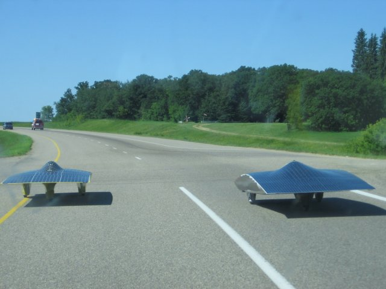

The democratization of technology isn't just about making things for less, to line the already full pockets of CEOs. The ubiquity of technology also allows hobbyists and students to build more for less. Nowhere is this truer than for aerodynamic gadgets such as cars, planes and even wind turbines!
Why not try building a wind turbine? Short on ideas? Try a Google search for 'build your own wind turbine' and you'll be inundated with ideas and designs for wind turbines. Blades cut from plastic pipe and a repurposed generator from Ebay are enough to get you started on a horizontal axis wind turbine generating environmentally friendly energy with zero greenhouse gas emissions. If you're feeling a little adventurous and don't have much wind around, why not consider building a vertical axis wind turbine, maybe a Savonius or a Darrieus, which can exploit the merest whiff of a breeze. These are things your neighbor will have a hard time topping by shopping at Home Depot.
Solar Powered CarsCompeting in the 2005 North American Solar Challenge


 Get our Blog feed
Get our Blog feed